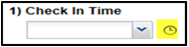
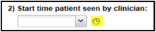
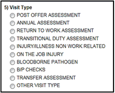

Productivity Reporting and the Check In/Check Out Form
To obtain the most accurate data to assess productivity by clinic location and clinician, you need to queue up and complete a Check In/Out form for each visit. The Check In/Out form is not needed when using the Event tab for flu or annuals. Using the Check In/Out form provides:
Productivity reporting
Assess patient wait time
Clinician/patient time
Total patient encounter time
Number of visit types per clinic and clinician in a defined time frame
Implement and test quality improvement plans.
Using the Check In/Out Form
Order the form with every visit type you wish to track.
Upon patient arrival:
Front desk or provider will open the Check In/Out form from Open Orders.
Enter the Check In Time. Use the quick select “clock” icon.

Select the Visit Type (if known).
Click SAVE DRAFT.
When the clinician is with the patient:
In Open Orders, open the form.
The clinician enters the clinician check in time. Use the quick select “clock” icon.

Confirm or select the Visit Type. This is important for productivity reports.

Click SAVE DRAFT.
At completion of visit:
Either front desk or clinician will select check out time.
Click SUBMIT FINAL.
Using Productivity Reports
From Reports > Standard Reports > Operational > EHS Visit Statistics:
Check-In Visit Type Summary Report – number of encounters by visit type, by clinic location, by provider, for a specified appointment date range.
Check-In Visit Type Details Report – details of encounters and visit types including waiting room check-in time, clinician check-in time, encounter check-out time for analysis of wait times and encounter times.
Enter the date range for which you want to report visits/encounters.